Start Here
How the documentation is organised, what each area holds, and the rules that stop it becoming a pile.
Start Here·Chapter 1
How this documentation is organised
HTML-Notes is a chat-driven canvas: the user asks, the router picks a path, the agent (shared lazy-agent-service runtime) returns widgets. The documents are grouped by what we built, not by date. Every page declares one area as part: in its front matter, and the Doc-Client Web Hub groups by it.
The areas
| Area | What lives here | Folder |
|---|---|---|
| Runtime and architecture | boundary model, contract ownership, note ownership, runtime migration, the Prism exit | docs/architecture/ and CONTRACT_OWNERSHIP |
| Canvas and widgets | widget factory, App Hub, control plane, canvas feed, chart legend, widget-wave handoffs | docs/canvas/ |
| Routing and agent | tier gates, classifiers, follow-up targeting, router reliability, the agent roadmap | docs/routing/, plus DEBUG_WAVE_PLAN and FOLLOWUP_TARGETING_PLAN |
| News and research | the news pipeline, web search, research reliability, market-news grounding, benchmarks | docs/news-research/, plus WEB_SEARCH and the web-data benchmark audit |
| Music player | canvas mini player, hand-off to the music-player app, ratings sync, playback health | docs/music/ |
| Ops and quality | test-suite health, dependency refresh, deploys | docs/ops/ and dependency-security-refresh |
Superseded and finished pages live in docs/archive/ with a banner naming what replaced them.
Five pages stay at their old paths on purpose: code comments and tests cite them by path (CONTRACT_OWNERSHIP.md, DEBUG_WAVE_PLAN.md, FOLLOWUP_TARGETING_PLAN.md, docs/WEB_SEARCH.md, docs/audit/AUDIT_2026-09-21_WEB_DATA_COLLECTION_BENCHMARK.md). Move them only together with those comments.
Page types (type: in front matter)
- spec: how a system works today. Edited in place.
- decision: a short dated note of what was decided and why.
- plan: work not yet done, or a design record. When it ships, fold the outcome into the spec and archive the plan.
- record: evidence of a finished wave, audit or handoff. Dated; not edited afterwards.
Status words
approved and in-progress (live work, subject to the staleness check), shipped, verified, reference (kept for provenance; not checked against the code), superseded, abandoned.
Rules that stop the pile
- One current page per topic. A new wave updates the area's spec or adds one dated record; it does not start a parallel document.
- Root stays clean. No new
*.mdin the repo root. File underdocs/<area folder>/and give it the front matter above. - Finished plans and one-off reports move to
docs/archive/with a banner naming the replacement. Checkgit grepfor the file name first: if code, tests or scripts cite it, leave it and fix the citation in the same change. - Pages are sorted by
part:, not by folder or date. Pick the area that matches the product surface. - Dates in names are for records only; specs carry no date in the file name.
Known gaps
HANDOFF.md(66 KB, now docs/canvas/HANDOFF.md) is a log of about twenty dated handoffs across several areas; it should be split by area.- Pages marked
referenceandtype: plan(AGENT_ROADMAP, RESEARCH_RELIABILITY_PLAN, DEV_CHECKLIST_2026-07-21, the three music plans, FOLLOWUP_TARGETING_PLAN) have not been checked against the code; each needs an owner to mark it shipped, superseded, or still open.
Music player
The canvas mini player, its hand-off to music-player, ratings sync, and playback health.
Music player·Chapter 2
Music Swap, Song Thumbs, Live News Networks and News Summaries
Docs audit 2026-10-26: still shipped. The five html-notes commits cited below (
f0bc09f,4a69f7c,5013a4d,83e923c,c8db79e) are ancestors oforigin/main, and none of the 47 commits since 2026-10-11 reverts them.66fab33is a lazy-agent-service commit, also on its main.review-byremoved.
2026-10-11. Tested with nemotron35, the weakest model in rotation, on the idea that guardrails that hold for it also hold for GLM.
1. A new music ask cut the music to silence (f0bc09f)
A new music ask swaps the canvas, and the swap tore down the old widget. Its destroy() stopped the audio before the new widget had a track, so the user heard silence.
Fix (app/static/js/widgets.js): destroy() now parks the playing audio in window.__hnMusicCarry (parkForSuccessor). The next music widget adopts it in init (adoptCarry) and lets it go when its own track fires playing (releaseCarry). If nothing claims the audio within 2 s, it stops. An explicit close is different: WidgetManager.dismiss marks the element data-user-dismissed="1", and that still stops the music.
Tests: tests/test_music_swap_keeps_playing.mjs (7) on tests/_music_widget_harness.mjs.
2. Thumbs up rated the artist, not the song (4a69f7c)
Thumb state is now keyed by track id (localStorage hn_music_song_prefs). Thumbs up POSTs the song to music-player /api/favorites (youtube://<id>, rating 5). Thumbs down, or clearing an earlier thumbs up, DELETEs it. The title reads "Like this song". Tests: tests/test_music_thumbs_rate_the_song.mjs (5).
3. "cnn live news" / "fox live news" / "put on fox news" (83e923c, 5013a4d)
A named network now plays its own live stream, never a look-alike channel. app/services/youtube_helpers.py has a _NEWS_NETWORKS table (patterns, official channels, handles).
pick_news_network_live tries these in order:
- The channel's
/@Handle/livepage: a canonicalwatch?v=plus"isLiveNow":true. - An official-channel live search.
- An honest fallback, titled "<Network> isn't live on YouTube right now — latest: …".
is_network_live_ask catches "put on / tune in / watch <network>", so the news pre-router no longer turns those into a headline card. Tests: tests/test_live_news_networks.py (11).
4. News summaries: none, or only one link
Two causes, fixed in two repos:
- No summary at all. lazy-agent-service read Exa's rate-limit reply (HTTP 200,
_meta["ai.exa/rateLimited"]) as success with 0 results, cached it, and never reached SearXNG. ItsSCRAPER_SERVICE_URLalso defaulted to localhost inside the container. Fixed in lazy-agent-service66fab33. - Only one link summarised (this repo,
c8db79e): - The relevance gate vetted 3 stories, and then the editor's omissions deleted 2 of them. On a gated topic ask the editor can no longer drop a story. Any story it skips is summarised on its own (
_summarize_sources_individually). - Topic cards now read the article bodies, not ~200-char provider snippets.
- Google News RSS links (
news.google.com/rss/articles/CBMi…) never redirect server-side. The scraper spent ~24 s failing on each one, which sank the shared 12 s batch.search._resolve_google_news_linksdecodes them to the publisher URL with Google'sbatchexecute(8/8 live, about 1 s), so the card links point at the publisher too. _attach_article_bodiesscrapes each story in its own call, so one slow site loses only itself, and it logs each miss with its reason.
Live "news about ai regulation": 3 vetted stories, 3 summaries (before: 1), 23 s.
Tests: tests/test_news_topic_summaries.py (3), tests/test_google_news_links_resolve.py (3), tests/test_market_news_grounding.py (updated for per-item scrapes).
Watchlist
fast_llm_jsoncalls vLLM directly instead of the lazy-agent-service harness.- Answer cards can leak raw citations ("Sources : 0, 1, 2").
- "what happened with hurricane simon" routes to a map.
Agent routing (2026-10-16 cleanup)
Every agent path already targeted lazy-agent-service (LAZY_AGENT_URL, :5591) since the 2026-10-15 prism exit. This wave removed the last stale "prism" references (comments, log strings, the if True: prism-mode wrapper in app/routes/message.py) and made the health probes (/health/app → _agent_dependency_status and GET /models) send the same x-project / x-username attribution headers as the /agent call, so the gateway no longer logs html-notes' ~2/min probes as default/anonymous.
Music player·Chapter 3
Music widget: compact bento layouts
2026-10-29. The canvas mini player (render_mini_music_player in app/widgets/factory.py, with a hand-maintained twin in app/static/index.js) prints the same artist three times for an ordinary artist ask, and the card is pinned to a fixed 184px that doubles to 384px when the queue opens. This chapter records the redundancy, the compaction rules, five full-width visual directions, a four-layout half-width retro set (300px), and a Walkman whose key row is a real Blender-built glTF asset.
The live, interactive mockups (playing / long title / queue open / narrow 300px, all clickable) are at http://10.0.0.171:8910/static/music-player-designs.html — open that page to judge the designs; this chapter is the written record and the comparison.
Nothing in the widget has been changed yet. The five layouts are mockups only.
The redundancy
For “play Buckethead” the card shows:
| Where | String | Source field | Why it is there |
|---|---|---|---|
| Top chip | BUCKETHEAD | genreFilter (the routing query) | Names the ask |
| Title line | Buckethead - Soothsayer | currentTrack.title (raw YouTube title) | Upload title |
| Second line | Buckethead | currentTrack.artist (the channel) | Channel name |
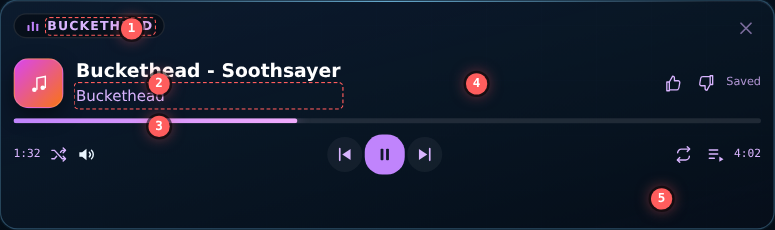
Three strings, one fact. The chip is the same act because the ask named an artist; the title repeats it because YouTube titles are Channel - Song; the second line is the channel again. The rating controls and their status text also take ~110px from the identity column, which is why the title is capped at max-w-[55%].
The compaction rules
- Every string appears exactly once. Identity is one line:
artist — title, with the artist split out of the raw upload title when it is already a prefix. - The chip only survives when it says something new. Show it when
kind === 'genre'and the genre differs from the artist; otherwise a 3px accent tick carries the mode. - Thumbs, close, and volume are hover-only. They keep their function and lose their permanent pixels.
- Times live inside the timeline tile, not in a separate control row.
- The queue never changes the card height. Overlay, or a portal panel anchored to the card. The masonry layout script re-spans on every height change, so a growing queue is not just 200px — it is a re-flow.
- Status text replaces the identity line while loading; it never adds a row.
Identity line
split = raw.split(/\s+[-–—]\s+/) // "Buckethead - Soothsayer"
left = split[0]; rest = split.slice(1).join(" - ")
title = rest || raw
strip = /\s*-\s*Topic$|\(Official (Video|Audio|Lyric Video)\)|\[(HD|4K|Lyrics)\]/i
artist = channel, unless channel ends in " - Topic"
show = `${left} — ${title}` // artist once, from the title's own prefixLong example, the one the lab's “Long title” toggle uses: The Cinematic Orchestra - To Build a Home (feat. Patrick Watson) [Official Video] becomes The Cinematic Orchestra — To Build a Home (feat. Patrick Watson).
Bento grammar
Six tile roles, one datum each. Every layout below arranges the same roles, so the data contract does not change with the skin:
| Role | Holds | Notes |
|---|---|---|
ART | YouTube thumbnail (i.ytimg.com/vi/<id>/mqdefault.jpg) | Optional; Swiss omits it |
IDENTITY | artist — title | Exactly one occurrence of each |
TIMELINE | elapsed, bar, duration | 2–3px bar, 8–9px mono times |
TRANSPORT | prev / play / next | Play key is the only filled accent |
META | thumbs, volume, queue, rating status | Hover-revealed where possible |
QUEUE | list overlay or portal panel | Never grows the card |
Radii 8–10px, gutters 4–6px, accent reserved for the play key and the progress fill.
Five directions
Heights are the real rendered heights of the mockups, measured in Chromium at 620px wide. All five keep the hub's forced glass frame (index.css overrides background and radius with !important); the palette and inner grammar vary.
1 · Bento Rail — 72px (−112px, 61% smaller)
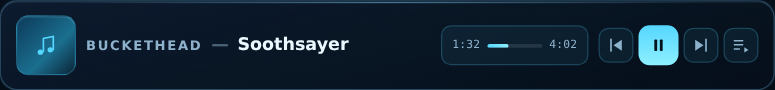
A single strip of four rectangles: art, identity, timeline, transport. It reads like a status bar — the quietest option and the cheapest on canvas.
- One identity line; artist in 10.5px caps, em dash, title.
- Times in the timeline tile (
1:32 ▬▬▬ 4:02). - Queue is a portal panel anchored below the card: 0px height change.
- Thumbs and close are hover-only; volume moves into the queue header.
- At ≤420px the timeline tile and prev/next drop; art, identity, play, queue remain.
Trade-offs: least art presence (48px tile); long titles need the marquee; the portal panel needs position:fixed plus a body append to escape overflow:hidden.
2 · Bento 2×2 — 168px (−16px, and −216px with the queue open)
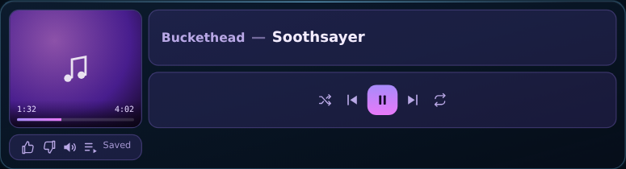
Four equal rectangles with the art tile spanning both rows. The progress bar rides the bottom edge of the art, so the timeline costs nothing extra.
- Identity tile allows two clamped lines, so a long title does not marquee.
- Art tile earns its space: real thumbnail, with progress in its foot.
- Meta tile carries thumbs, volume, queue, and the rating status.
- Queue covers the grid; five rows fit, card stays 168px.
Trade-offs: only 16px shorter than today (the win is the queue); the busiest of the bento options; wants a real thumbnail rather than a glyph.
3 · Vinyl Dial — 120px (−64px)
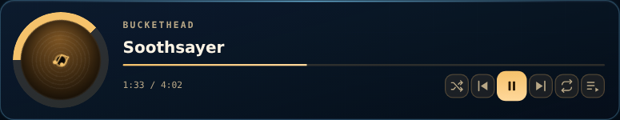
One circular element does the heavy lifting: the art is a record that turns while playing, with progress as a ring around it. Everything else is thin type — a two-panel split, not a tile grid.
- Artist eyebrow + title: two stacked strings, each printed once.
- The progress ring replaces both the bar row and the times row.
- Record turns only while playing (6s linear), so the card is alive without a marquee.
- Queue overlay inside the card; three rows fit.
Trade-offs: most distinctive silhouette; round art needs a real thumbnail; warm brass palette is the farthest from HUD cyan; rotation must respect prefers-reduced-motion.
4 · Cassette Deck — 128px (−56px)
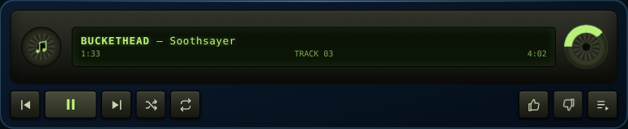
A tape shell: two reels, one LCD line, chunky mechanical keys. The identity is a single marqueed LCD line, and the right reel doubles as the progress dial.
- LCD line holds
BUCKETHEAD — Soothsayer, marqueed only on overflow. - Tape counter in 8px mono replaces the time row.
- Reels spin only while playing.
- Keys are 30×28 with a real pressed state — the most tactile controls here.
Trade-offs: strongest personality, least “dashboard”; skeuomorphism costs a few pixels to shadows; the LCD green/amber is a palette commitment.
5 · Swiss Editorial — 96px (−88px)
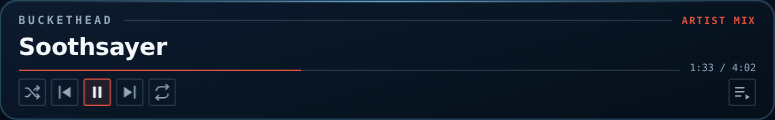
No tiles, no art, no chrome: a kicker, a big title, a 1px progress rule, and outlined keys. The title is the interface.
- Kicker + title on separate rules; each string once, artist in 9px caps.
- Progress is a hairline under the title; times sit on its right end.
- Keys are outlined squares, not filled pills; accent only on the play key.
- No art at all, so the widget never waits on a thumbnail.
Trade-offs: most readable type (19px title), but nothing shows what the track looks like — a real cost on a visual canvas.
Queue behaviour
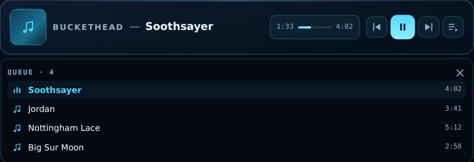
The rail opens its queue outside the card; the other four cover the card from inside. Either way the card height is unchanged, which is the point: no h-[384px] binding and no masonry re-span.
Half-width retro set (300px)
You liked the cassette and wanted half the width with no dead space. These four are one grid column wide (300px), with 3–6px paddings and no empty rows: every pixel is a datum, a control, or a texture. Same identity rule — artist once, title once, times inside the readout.
A · Walkman — 100px
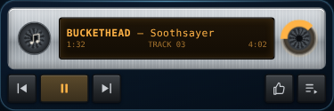
The cassette rebuilt as an 1980s personal stereo: brushed aluminium shell, two spools, one amber LCD line, black plastic keys. Two rows only — 58px shell and 26px keys, 4px apart.
- Amber LCD holds the identity line and the counter in the same window.
- Right spool is the progress ring; spools turn only while playing.
- Brushed metal is a repeating gradient — no image, no fetch.
- At 300px the LCD fits ~34 characters before it marquees.
B · Clear Neon Cassette — 100px
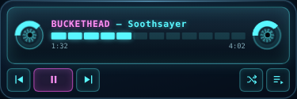
The 90s clear-shell cassette: see-through body, tape spools on both sides, a LED meter instead of a bar, neon-cyan type with a magenta artist.
- Both spools are rings: left shows remaining tape, right shows played.
- LED meter replaces the 1px bar: 12 segments, the last four turn magenta.
- Neon keys are 24px outlined squares — lighter than the walkman's plastic keys.
- Glow is CSS shadow, so nothing blurs the text.
C · PS2 Pixel Shader — 100px
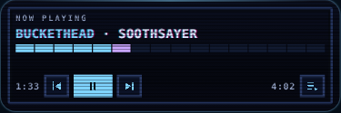
A PlayStation 2 boot-screen readout: 2px stepped borders, a scanline overlay, dither-blue surfaces, uppercase mono type with red/blue fringing, and a progress bar made of discrete cells rather than a smooth fill.
- Cell bar: 16 cells, filled ones cyan, the leading edge violet.
- Chromatic fringe on the title only (1px red/blue shadow).
- Scanlines are a 1px repeating overlay above content, under controls.
- Times sit at both ends of the control row, 8px pixel mono.
D · Buick LeSabre ’93 Cluster — 118px
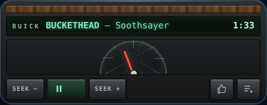
A 1993 GM instrument cluster: woodgrain strip, green vacuum-fluorescent readout, a needle sweeping an arc gauge as the progress, and chunky rocker keys with engraved labels.
- VFD line holds artist + title in green, with the digital clock at the right.
- Needle gauge is the progress: −90° at 0%, +90° at 100%, 28px needle, red glow.
- Rocker keys labelled SEEK − / SEEK +, engraved 7px mono.
- Woodgrain is a 19px repeating gradient — no image, no fetch.
A2 · Whole player in Blender — 150px
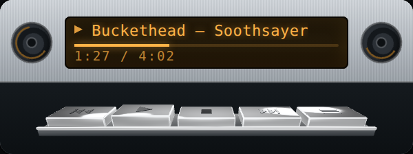
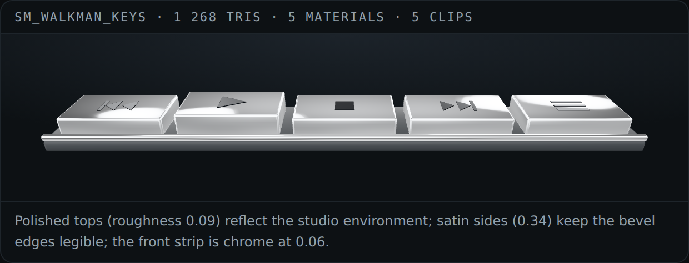
The card is now one glTF mesh instead of styled DOM: a 300 × 150 device with a walnut front panel, a chrome bezel frame, a recessed screen module, five silver keys that face the viewer, and an embossed WALKMAN wordmark.
- Source:
apps/doc-client/tools/walkman_keys/build_body.py, built headlessly (blender --background --python … -- static/models/player-body.glb). - Asset:
static/models/player-body.glb, 275 KB, 2 216 triangles, 7 materials, one 512 × 256 walnut grain texture packed into the file. - Wood: generated grain (warped rings + streaks) written as a real PNG and packed — procedural Blender nodes do not survive glTF export.
- Keys: polished front faces (roughness 0.09) against satin sides (0.34), with the icons cut in as real grooves (boolean, 0.9 mm deep) and filled with a dark inlay recessed 0.2 mm, so the indent reads as a shadow line rather than a painted glyph.
- Screen: the glass is 3D; the text is a DOM canvas anchored to the screen centre by a hotspot, drawn from a 5 × 7 bitmap font at 1 px and drawn only in two colours — amber on near-black, 43-cell progress bar, live time, PLAY/PAUSE.
- Feedback: clicking a key lights an amber glow around and under it for 0.7 s (CSS halo + inset bottom glow on the hotspot), plus a synthesised click. No key travel animation.
- Fallback: if the GLB fails to load the card keeps the pixel screen on its own.
- Live: http://localhost:8910/static/walkman-3d.html
Why a mesh and not CSS: the chrome reflects a live environment, the wood grain is a real texture, the keys are actual solids with real grooves, and the whole device holds up at 2× in the close-up. Cost: one 281 KB request and a WebGL context per widget — the reason to keep it to the one card that benefits.
All four keep the queue as an inset overlay (three rows fit) and the times inside the readout. Because they replace the card surface with metal, plastic, woodgrain, or dither, they need the shell opt-out (open question 4): index.css forces background-image and border-radius on .widget-container with !important, which would flatten these textures.
A2b · Realism variants — six separate demos to pick from
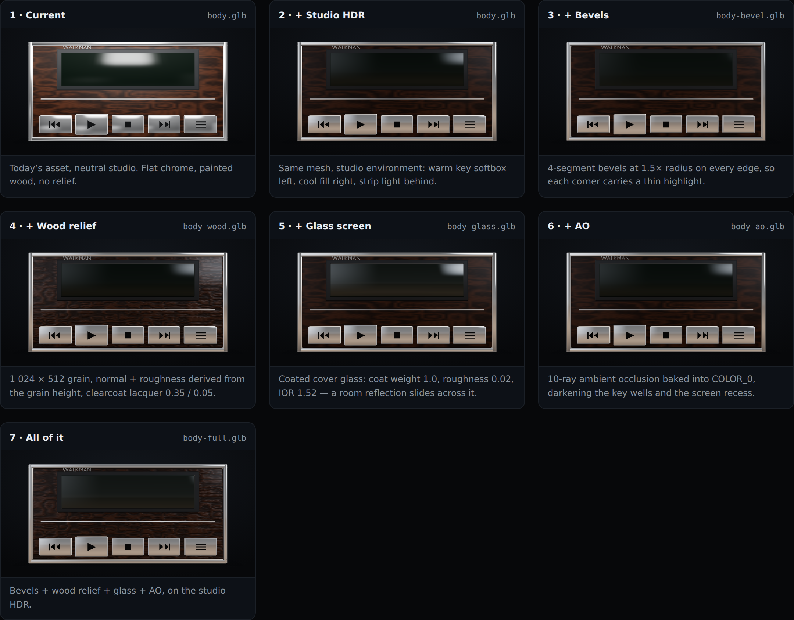
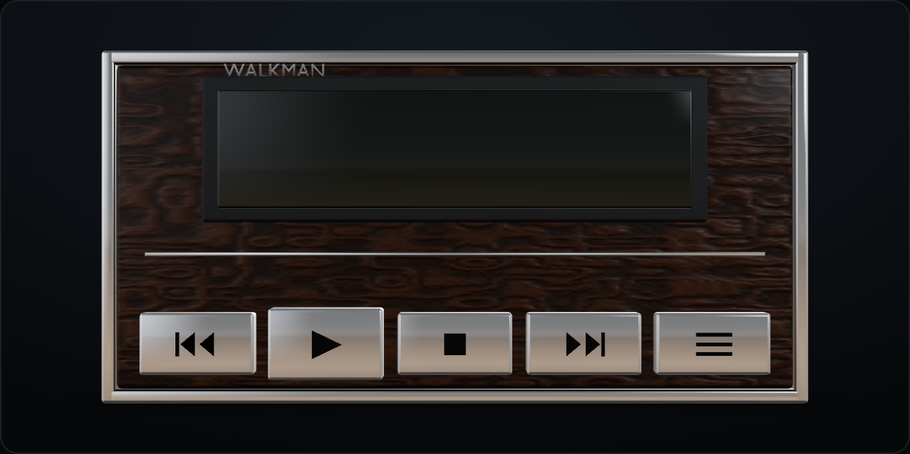
The wood-panel player looked good but flat: the chrome mirrored model-viewer's neutral grey studio, and the wood had colour but no relief. Six changes were built separately so each can be judged on its own.
| Variant | What changes | Asset |
|---|---|---|
| 1 · Current | today's page, neutral studio environment | 281 KB, 2 216 tris |
| 2 · + Studio HDR | a generated studio environment: warm key softbox left, cool fill right, strip light behind, dark floor | same mesh |
| 3 · + Bevels | 4-segment bevels at 1.5× radius on every edge, clamped to 45% of the thinnest dimension | 323 KB, 4 312 tris |
| 4 · + Wood relief | 1 024 × 512 albedo, normal and roughness derived from the grain height, clearcoat lacquer (weight 0.35, roughness 0.05) | 2.7 MB, 3 textures |
| 5 · + Glass screen | coated cover glass: coat 1.0, coat roughness 0.02, IOR 1.52, roughness 0.03 | 281 KB |
| 6 · + AO | 16-ray ambient occlusion baked into COLOR_0 on 24 primitives, 12 mm radius | 300 KB |
| 7 · All of it | bevels + relief + glass + AO on the studio HDR | 2.75 MB, 4 312 tris |
- Source:
apps/doc-client/tools/walkman_keys/build_body.pynow takes flags after--:bevel,wood,glass,ao,full.tools/walkman_keys/make_env.pygenerates the studio environment as a 512 × 256 Radiance RGBE file (static/models/studio.hdr, 512 KB, peak 16, mean 0.343). - Live: http://localhost:8910/static/walkman-3d-variants.html — every card after the first shares the studio HDR, so the differences are the asset, not the lighting. The toolbar swaps environment, tone mapping (ACES / AgX / neutral), exposure, shadow, and a 0.30 m close-up.
Why each one matters, in order of payoff:
- Environment. Chrome is a mirror; it can only look as good as what it reflects. A neutral grey studio gives grey metal. The generated HDR puts a warm softbox on one side and a cool one on the other, so the bezel and key sides carry distinct bright and dark bands.
- Bevels. Real objects have no 90° corners. A 0.5–0.8 mm bevel catches a thin highlight on every edge, which is what the eye reads as "manufactured" rather than "CG box". 2 216 → 4 312 triangles.
- Wood relief. Colour alone reads as paint. The normal map is derived from the same grain height as the albedo, the roughness map makes pores rougher and figure glossier, and a thin clearcoat adds the lacquer sheen.
- Glass. The screen should reflect the room. A coated cover glass gives a soft highlight that slides across it as you orbit.
- AO. Baked occlusion darkens the key wells and the screen recess, so the device sits on its own geometry instead of floating.
- Tone mapping. ACES with tuned exposure keeps the highlights from clipping; AgX is available if a softer roll-off is wanted.
Measured on 692 × 346 captures (2× DPR), each variant differs from the plain HDR render in its own region: bevels 10 773 px (max Δ158) across every edge, wood 12 487 px (Δ72) on the panel, glass 6 689 px (Δ58) inside the screen box, AO 2 091 px (Δ76) around the recesses, full stack 20 444 px (Δ161).
Cost: the full stack is 2.75 MB because of three 1 024 × 512 PNGs. At 512 × 256 it drops to roughly 700 KB — the difference between a demo and something a widget can load.
A3 · Pixel forest — 150px, the device grown into a tree
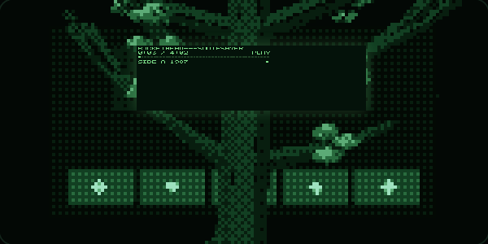
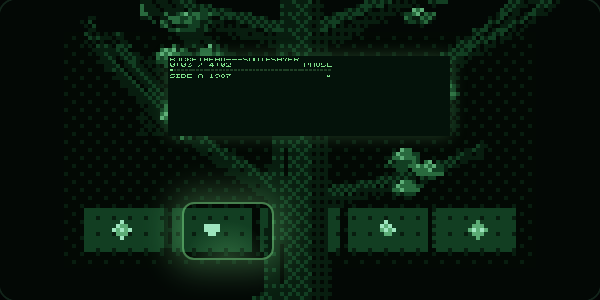
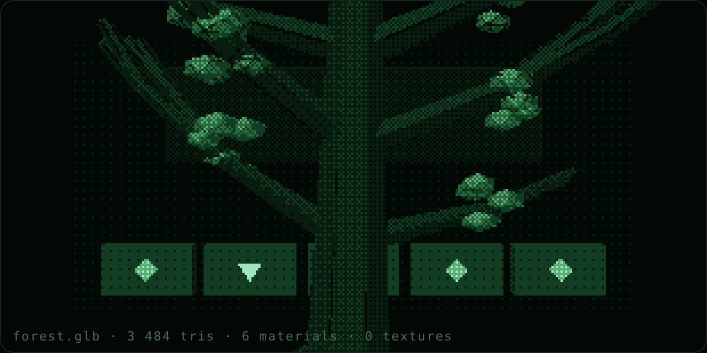
The same 300 × 150 device, but the Blender scene grows a tree around it and the whole frame is pushed through a pixel filter.
- Source:
apps/doc-client/tools/walkman_keys/build_forest.py→static/models/forest.glb— 240 KB, 3 484 triangles, 6 materials, no textures. - Scene: a mossy stone slab (the player), a five-key row with glowing runes carved into the front face, a trunk that splits into curling branches, and scattered icosphere leaves. The tree sways with the beat and the branches wrap the device rather than sitting behind it.
- Pixel filter: rendered at half resolution (150 × 75 backing for the 300 px card, 310 × 155 for the 620 px view) and upsampled with
image-rendering: pixelated. The shader converts every pixel to luminance, quantises it to a six-step green ramp with a 4 × 4 Bayer matrix, then pushes green and blue per band on a slow sine — the palette breathes, the geometry does not. - Interaction: the five keys are DOM buttons projected onto the 3D keys every frame, so they track the sway. Pressing one fires the key's rune to full emission (rest 0.10 → 1.7), holds the sway while it is lit so the glow is legible, and shows a green halo ring around the button.
- Screen: the same DOM pixel canvas, anchored to a projected screen rectangle, drawn with the 5 × 7 bitmap font — artist and title on one line, 43-cell progress bar,
SIDE A 1987strip. - Live: http://localhost:8910/static/pixel-forest.html
Cost: one 240 KB GLB and one WebGL context, the same budget as A2. This one is the "trippy" end of the set — it is the only direction that changes with the music rather than only displaying it.
Side by side
| Layout | Width | Height | vs 184px | Queue | Art | Identity | Palette |
|---|---|---|---|---|---|---|---|
| Current | 620px | 184px | — | Grows to 384px, re-flows masonry | 40px gradient tile | 2 lines + chip (artist 3×) | purple / fuchsia |
| Bento Rail | 620px | 72px | −112px (61%) | Portal panel below card | 48px tile | 1 line | HUD cyan |
| Bento 2×2 | 620px | 168px | −16px | Inset overlay (5 rows) | 132px tile | up to 2 lines | violet glass |
| Vinyl Dial | 620px | 120px | −64px | Inset overlay (3 rows) | 92px disc | eyebrow + title | warm brass |
| Cassette Deck | 620px | 128px | −56px | Inset LCD overlay | 40px reel | 1 LCD line | olive / amber |
| Swiss Editorial | 620px | 96px | −88px | Inset overlay (3 rows) | none | kicker + title | ink / vermillion |
| Walkman | 300px | 100px | −84px | Inset overlay (3 rows) | spool glyph | 1 LCD line | aluminium / amber |
| Walkman 3D | 300px | 150px | −34px | Inset overlay (3 rows) | spool glyph | 1 LCD line | aluminium / amber + chrome |
| Pixel Forest | 300px | 150px | −34px | Inset overlay (3 rows) | none | 1 pixel line | forest green / black |
| Walkman 3D full stack | 300px | 150px | −34px | Inset overlay (3 rows) | spool glyph | 1 LCD line | walnut + chrome + studio HDR |
| Clear Neon | 300px | 100px | −84px | Inset overlay (3 rows) | 2 spools | 1 LCD line | cyan / magenta |
| PS2 Pixel | 300px | 100px | −84px | Inset overlay (3 rows) | none | 1 pixel line | dither blue |
| Buick ’93 | 300px | 118px | −70px | Inset overlay (3 rows) | none | 1 VFD line | wood / VFD green |
The half-width set is the answer to the gap problem: at 300px each card holds two rows (readout + keys) with 3–6px padding, so nothing is padding for its own sake. The full-width set still exists for anyone who wants art on the canvas.
Recommendation
Cassette, at half width. Of the four half-width variants, Walkman is the safest: it keeps the cassette read, has the most legible amber LCD, uses two rows and no art fetch, and its keys are the largest targets at 300px. Clear Neon is the pick if the canvas wants colour; PS2 Pixel if it wants the retro-game signal look; Buick ’93 if it wants period-car character at the cost of 18px and a woodgrain palette.
Bento Rail remains the option if a full-width, art-less status bar is wanted; Bento 2×2 stays the art-forward pick. Vinyl and Swiss are still on the table.
What would change in code
app/widgets/factory.py→render_mini_music_player: the chosen layout's markup, plus the identity helper.app/static/index.js(~line 3540, the self-heal twin): the same markup, structurally identical. Both copies must move together.- The
:class="showQueue ? 'h-[384px]' : 'h-[184px]'"binding: replaced by one fixed height per layout. app/static/index.css(.music-widget-rootblock): marquee/typography rules, plus container-query collapses.widgets.js→asTrack: keepidso the thumbnail URL can be derived; optionally addthumbto the track shape.- For the retro set: a music-specific shell opt-out, because
.widget-containercarriesbackground-imageandborder-radiuswith!importantand would overwrite the metal, plastic, woodgrain, and dither surfaces.
Verification of the mockups
- Rendered heights in Chromium: 184 / 72 / 168 / 120 / 128 / 96px for the full-width set, and 100 / 100 / 100 / 118px for the half-width set; content
scrollHeightnever exceeds the declared height at 620px or at 300px. - No element escapes its card at either width (geometry check over every descendant), and the grid tiles do not overlap.
- Queue rows visible: rail 4 (portal), grid 5, vinyl 3, tape 4, swiss 3; walkman / neon / ps2 3 each, buick 3.
- The PS2 cell bar and the neon LED meter track progress (8 of 16 cells and 6 of 12 segments lit at ~50%); the Buick needle transform matches −90° + 1.8° per percent.
- The 3D player loads from one GLB: 2 216 triangles, 7 materials, wood texture packed (mean RGB 64/34/16), icons centred on every key (x −0.108…0.108) and recessed 0.2–0.9 mm inside the face; the screen canvas lands inside the hotspot box with 1 027 amber pixels; a key click lights 2 475 warm pixels in a halo around that key only.
- The pixel forest renders: 4 258 of 11 250 backing pixels lit, 32–37% of the card green-dominant with no cyan cast after the palette was rebalanced; the five runes sit on the key row and a press moves 44 pixels by up to 135 green levels inside that row (measured on a frozen frame, so the delta is the glow and not the sway).
- The sway holds while a key is lit, so the glow is not smeared by motion.
- Each screenshot contains its design's accent colour, and every pair differs (mean RGB delta 39.6–88.0), so the layouts are genuinely different pixels, not recolours of one.
- Long-title state: each layout clips or marquees within its own box (track widths 370–445px inside a 300px card, page scroll width unchanged); the baseline replica demonstrates the raw-title overflow it has today.
Open questions
- Which half-width skin — Walkman, Clear Neon, PS2 Pixel, or Buick ’93?
- Art — real YouTube thumbnail, or keep a glyph and skip the fetch? The half-width set currently fetches nothing.
- Queue — inset overlay (all half-width designs), or a portal panel?
- Shell — the retro set needs the music widget to opt out of the
!importantframe rules; confirm that is acceptable. - 3D player — worth one WebGL context per widget, or keep the 3D only in the demo and ship the flat card? And if it ships, which realism level: the 281 KB baseline, bevels (+42 KB), or the full stack (2.75 MB, or ~700 KB with the maps cut to 512 × 256)?
- Pixel forest — ship as the "music-reactive" skin (needs an audio analyser, not the synthesised beat), or keep it as a demo? It costs the same as A2 but only reads as trippy when it actually follows the track.
Ops and quality
Test-suite health, dependency refreshes, deploy notes.
Ops and quality·Chapter 4
Dependency security refresh (Python pins)
2026-10-22. requirements.txt is what the Docker image installs (python:3.11-slim), so the pins, not the local .venv, decide what ships. pip-audit -r requirements.txt on the old pins reported 40 advisories in four packages: starlette 0.36.3 (14, pulled in by fastapi==0.110.0), python-multipart 0.0.9 (14), jinja2 3.1.3 (8) and pymongo 4.10.1 (4).
What changed
| Package | From | To |
|---|---|---|
| fastapi | 0.110.0 | 0.161.0 |
| starlette (now pinned explicitly) | 0.36.3 (transitive) | 1.9.0 |
| uvicorn | 0.28.0 | 0.54.0 |
| pydantic | 2.6.4 | 2.14.1 |
| jinja2 | 3.1.3 | 3.1.6 |
| python-multipart | 0.0.9 | 0.0.32 |
| pymongo | 4.10.1 | 4.19.0 |
| beautifulsoup4 | 4.12.3 | 4.15.0 |
| ddgs | 9.14.4 | 9.16.0 |
| respx | 0.22.0 | 0.23.1 |
| certifi, anyio (now pinned explicitly) | transitive | 2026.10.19, 4.15.1 |
httpx, pytest and pytest-asyncio were already at their newest release. starlette, certifi and anyio are pinned so the image build is reproducible and a future resolver cannot slide back to a vulnerable release.
Verification
- The set resolves under Python 3.11 and 3.12 (
pip install --dry-run, 3.11 with--python-version 3.11 --only-binary=:all:), and installs into a clean 3.12 venv. pip-auditon that venv: No known vulnerabilities found (was 40).- Test suite (
tests/, serial): baseline on the old pins was 3 failed / 1328 passed. The three failures are intests/test_app_hub.py(portal registry URL expectations) and are unrelated to dependencies. - One test needed a change for the new FastAPI:
tests/test_watches.py::test_events_route_streams_pushed_linesiteratedapp.routesand read.path, but FastAPI 0.16x wrapsinclude_router()routes in an_IncludedRouterthat has no.path. The test now checksapp.openapi()["paths"]. No application code changed.
The app imports no deprecated Starlette API (TemplateResponse, on_event), so the FastAPI 0.110 to 0.161 and Starlette 0.36 to 1.9 jump needed no code change.
Resolved tickets
| Ticket | Root cause | Commit |
|---|---|---|
| Vulnerable Python pins (starlette, python-multipart, jinja2, pymongo) | old pins; starlette held back by fastapi==0.110.0 | see git log -- requirements.txt |
A NAS redeploy is needed for the new pins to reach the container.
Follow-up: .venv was tracked in git
.venv/ (2,931 files) had been committed since the initial commit despite the .gitignore entry, so any venv refresh showed up as ~650 modified files. It is now untracked with git rm -r --cached .venv; the files stay on disk and the Docker image is unaffected (it builds its own venv from requirements.txt).